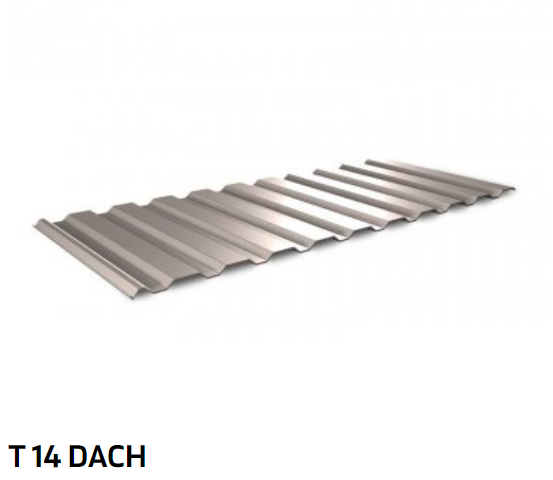
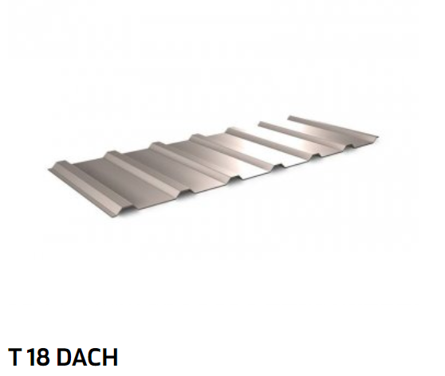
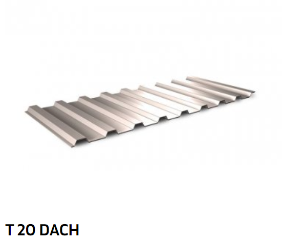
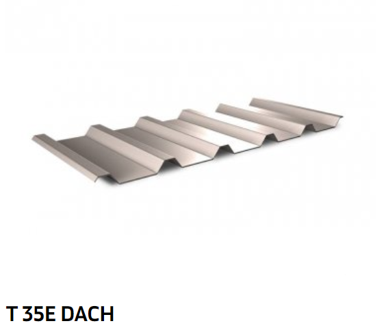
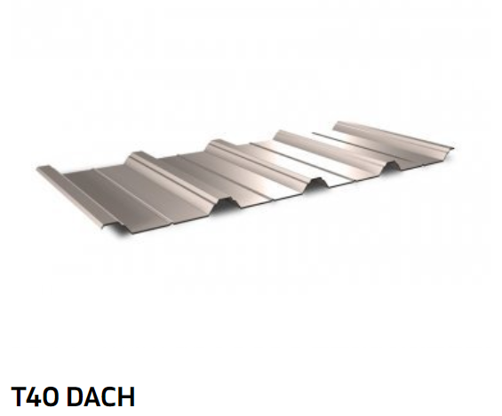
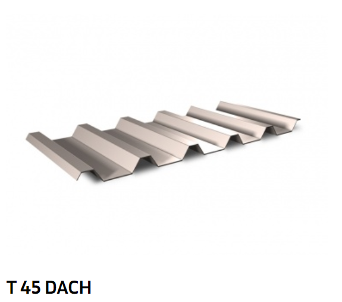
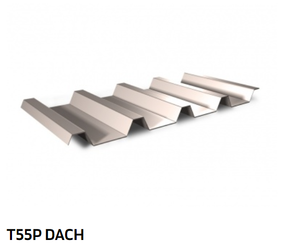

Blachy trapezowe to ekonomiczny materiał do krycia dachów i elewacji. Szeroki wybór profili – od wysokości 6 mm do 200 mm –oraz rodzajów blachy (ocynkowane, powlekane) pozwala na różnorodne zastosowanie ich na dachach i elewacjach, bramach i ogrodzeniach oraz konstrukcjach nośnych w budownictwie indywidualnym i przemysłowym.
Blachę trapezową o niskim profilu można stosować do krycia powierzchni elewacyjnych (T6 - T60) i dachowych (T14 - T60) domów jednorodzinnych, garaży oraz małych obiektów handlowych. Natomiast wyższe profile, z uwagi na swoją wytrzymałość, znajdują zastosowanie na dachach o dużych rozpiętościach i w konstrukcjach nośnych. Profile o wysokościach T50 – T200 wykorzystywane są przy budowie dużych obiektów przemysłowych, handlowych i usługowych. Te najwyższe (T135 – T200) stosuje się w konstrukcjach nośnych, o znacznych rozpiętościach (dachy płaskie izolowane o dużych powierzchniach) i do wykonywania stropów.
Blachy trapezowe charakteryzują się wytrzymałością, sztywnością konstrukcji i ekonomicznością zastosowania.






